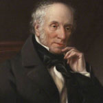

Arundhati Roy

Arundhati Roy is an Indian writer, best known for her book The God of Small Things (1997), which won the Man Booker Prize forFiction in 1997. She was born in Shillong, Meghalaya, India. Her parents were Rajib Roy, a Bengali Hindu tea plantation
William Wordsworth
On April 7, 1770, William Wordsworth was conceived in Cockermouth, Cumbria, England. Wordsworth's momkicked the bucket when he was eight—this experience shapesa lot of his later work. Wordsworth went to Hawkshead Grammar School, where his adorat
John Green
John Michael Green is the author of Looking for Alaska, An Abundance of Katherines, Paper Towns, and The Fault in Our Stars.He is an American author, vlogger,writer, producer, actor and editor.He was born in Indianapolis, Indiana on august 24
GAYLE FORMAN

Gayle Forman is an American young adult fiction author. She was born in June 5, 1978 in in Los Angeles. Her best known novel is If I Stay which topped the New York bestseller list for young adult fiction category. It was later made into a film to
SYLVIA PLATH

Sylvia Plath was born on 27 Oct, 1932 in Boston, US was an American poet,novelist , short story writer . She wrote poetry , friction and short stories.Her best work was confessional poetry in which she wrote The colossus and other poems
PAULO COELHO

Paulo Coelho is irrefutably of the best writers of late circumstances, offering than 100 million books in no less than 150 nations globally. Paulo Coelho has met with a considerable measure of progress; his books have been generally decipher